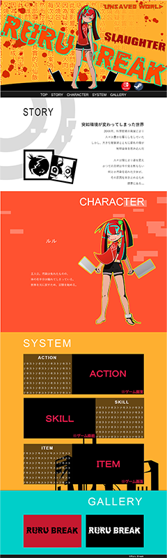
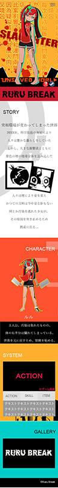

横画面にしてね


架空のゲームサイト
製作時間 約40日
使用したソフト CLIP STUDIO Photoshop Dreamweaver illustrator After Effects
架空のゲームサイトを作成しました。
javascriptを勉強するため、ハンバーガーアイコンやコンテンツの
表示方法を工夫しました。
ゲーム内容が中華包丁を振り回すアクションの設定なので、怖めのイラストと
中華風の配色にしています。
SYSTEM欄は画面サイズによって見にくかったので変更しています。